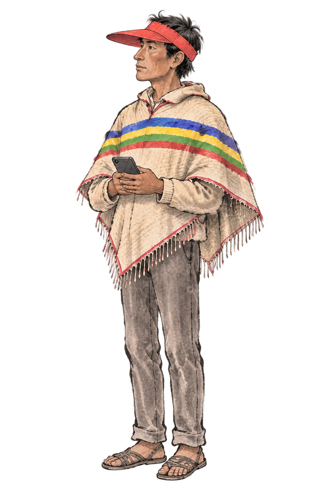

Altiplano boliviano
La lluvia llega suave. Baja para conocer el territorio que cultiva Julián.
Desliza para abrir el paisaje
Cada surco empiezaen un paso.
Tres cultivos resistenen la altura.
El paisaje está completo.
Simulación del paisaje
El rostro
Una parcela nunca mira un solo cielo.